2.3 Плоская гармоническая звуковая волна
Решением
волнового уравнения:
является функция вида:
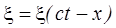.
Если волна гармоническая, то
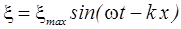,
где 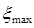 - амплитуда смещения частиц в
волне;
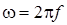-
циклическая частота колебаний в волне;
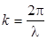 - волновое число;
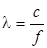 - длина звуковой волны.
Скорость колебаний частиц в волне:
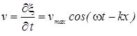,
где 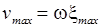 - амплитуда колебательной
скорости.
Звуковое давление:
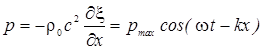,
где 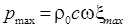 - амплитуда звукового
давления.
Отметим,
что отношение звукового давления к колебательной скорости равно волновому
сопротивлению среды 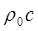.
Акустическая
добавка к плотности равна:
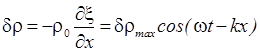,
где
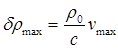-
амплитуда акустической добавки к плотности.
Акустическая
добавка к температуре:
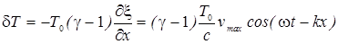.
Следует отметить, что обычно задаются не амплитудные значения величин, характеризующих звуковые колебательные процессы в среде, а действующие или эффективные, которые при гармонических колебаниях в 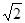 раз меньше амплитудных.
Например:
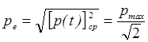.
Далее индекс e будем опускать и подразумевать, что если задается какая-то конкретная величина (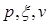 и так далее), то имеется в виду ее эффективное значение.